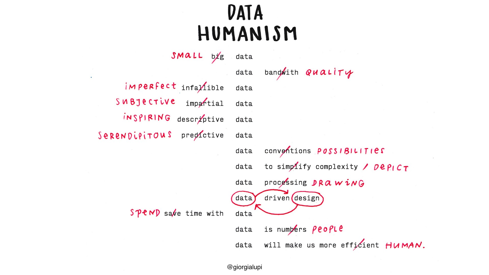

Data is now recognized as one of the founding pillars of our economy, and the notion that the world grows exponentially richer in data every day is already yesterday’s news. Big Data doesn’t belong to a distant dystopian future; it’s a commodity and an intrinsic and iconic feature of our present — like dollars, concrete, automobiles, and Helvetica. The ways we relate to data are evolving more rapidly than we realize, and our minds and bodies are naturally adapting to this new hybrid reality built of both physical and informational structures.And visual design — with its power to instantly reach out to places in our subconscious without the mediation of language, and with its inherent ability to convey large amounts of structured and unstructured information across cultures — is going to be even more central to this silent but inevitable revolution.